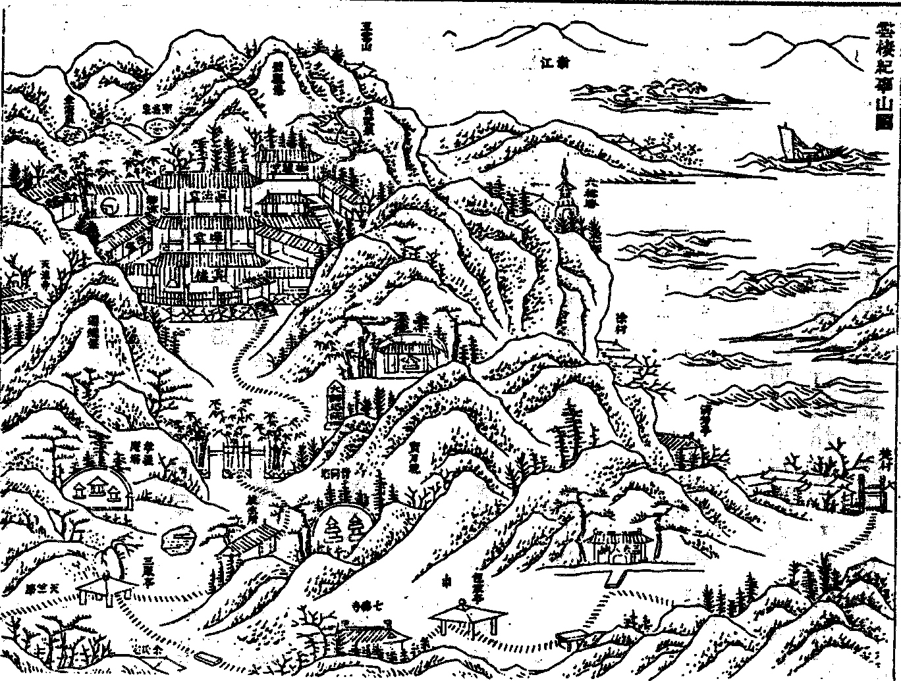

嘉興大藏經 第33冊
No.B277 雲棲法彙（選錄）(第12卷-第25卷) (14卷)
【明 袾宏著（原本多缺 依金陵本補印 並補後增讚序等文 凡補印者 於該條目上作△以志之）】
第 23 卷
雲棲紀事目錄
孝義無礙庵錄目錄

聖駕幸寺恭紀
雲棲寺址山徑深幽。僧眾恪守 師誡虔修淨業。何幸茲月
鑾駕降香。垂詢本末。不敢不記。本年二月十五日。
聖駕自禹陵回鑾幸寺。禮
佛竟。至北堂僧寮晏坐。展閱內典。見衣桁皆破衲。几皿皆麤舊。
上曰。觀此。便知僧皆苦修。非世法圖名聞利養者。因
詢僧曰。此寺建自何年。僧跪奏云。寺係宋初乾德五年。伏虎禪師開山。逮明季弘治七年。霖雨發洪。殿宇經像。隨水漂沒。廢圮幾及。百載。至隆慶五年。有師祖蓮池。法諱上袾下宏。結茅三楹。善信皈心。漸就開創。今已一百一十九年矣。
上曰。自開創以來。守何宗派。僧再奏云。師訓專修淨土。晝夜六時。持名念佛。惟以守戒放生為事。
上即傳侍衛。引僧登山。觀玩竹林。擷蘭數本。
天顏喜悅。隨問林木名色。僧一一謹對。
上諭前往放生所。
垂睞飛走。
聖懷憫惻。又
詢僧眾幾何。僧奏云。合寺僧行約三百餘。從不募緣。亦不種植自給。懍遵叢席規約。大眾粒米同餐。幸賴
天恩。亦無匱乏。
上即傳諭侍衛。賚白金五緘。眾僧叩頭謝
恩。伏道送
駕。隨諏十七日謹奉
上賜銀兩。備供
三寶。恭祝
聖壽。普齋僧行。遠近沾
恩。伏念經教盛於三藏。祇聞
帝陛賜衣。瑞兆現於圭峰。惟是
皇宮說法。未有
九重臨御。
翠華賁止。
霽顏諮詢。
獎賚僧徒。如今日者。恭紀始末。勒垂不朽。聿傳盛事。永戴
皇圖。謹記。
欽惟
聖慈普洽。幬庇山林
恩賜優覃。仰蒙
高厚。念僧徒之微末。荷
天眷之隆施。
帝德難名。載書恭紀。
乾隆十六年。歲次辛未。
今皇帝舉省方之典。特奉
慈幃。臨幸東南。三月抵浙。觀風之暇。歷覽林泉。是月初五日。蒙
駕幸雲棲寺。寺僧三百餘眾。跪迎道左。
上次山門。垂問當家是方丈(寺僧)。具奏。向遵開山祖遺約。歲易正副當家。不立方丈。
上更問宗派規模。念佛講經。一切事宜。一一跪奏訖。
駕進前殿禪堂。及蓮祖像前。皆上香致敬。內有禪堂僧四十八員。跪誦無量壽經。恭祝
聖祚。
上親臨問。戒令勿輟。乃入內山修篁深處進小膳。時山蘭盛開。幽香盈谷。
上有感於寮舍清閒。庭芳舒秀。遂
御筆寫蘭一幅以
賜。冠以詩。
時辛未暮春上浣也 乾隆并識
更
賜南無阿彌陀佛六字匾額。白金二百兩。僧進山產數件。
上親撿視。
諭收筍乾一匣。久之。
駕旋西湖。寺僧遂詣行宮恭請
寶璽。越七日。
聖駕重幸。仍三處上香禮
佛。及觀董華亭碑額。乃
詢真跡有無。寺僧遂撿雲棲碑記一冊。金剛經一卷。以
進。
上大書香光法寶。永鎮雲棲。於經之面頁。復識以詩。
山寺雖多此寺幽。特教清蹕重來遊。洗心亭別仙凡界。萬騎紛闐合著留。
綠玉參天逕幾迴。石門煙月鎖莓苔。蓮池塔院自千古。奚事花幢坐墨胎。
修篁深處小延俄。又覺簷陰幾許過。山鳥啅林還太古。野花繪壁自春和。
淨土香光慧業薰。弆藏法寶玩顏筋。蘭亭昨過相衡較。真蹟猶贏王右軍。
是日即景雜詠。得四絕句。並書帙後。留施永傳。
又蒙
御書經籤。金剛般若波羅密經。董其昌真蹟。
御鑒題籤。 并
賜香門淨土匾額。
山深獨闢清淨界 竹翠常飛妙鬘雲
對語一聯。
御題五言排律。
一碧萬竿翠。雙流百折澄。竹泉行盡處。門徑得來登。磬禮悲心佛。疇咨苦行僧。鐘魚守本色。拳拂謝多能。矮屋常妨帽。明珠不斷燈。蓮池家法在。六字括三乘。
雲棲六韻辛未春 御筆
又蒙
賜大內三希堂法帖一部。計三十二冊。
御書心經塔碑文一軸。 深山蕭寺。荷蒙
清蹕遙臨。天文疊彩。誠異數也。 次日。於大關送
駕回鑾。
乾隆二十二年。太歲在戊。
皇上復奉
聖母巡狩浙江。三月初二日。載幸雲棲寺。合寺僧行清塵待
駕。
上至。問正副當家名諱年籍。並禪堂規式。遂一一啟奏訖。隨
駕至正殿。禪堂。及蓮祖靜室。上香敬禮。如十六年式。即
賜荷包四個。瓷瓶一對。仍詣修篁深處小憩。
御書對語一聯。
指揮如意天花落 坐臥閒房春艸深。
是時山花盛放。嵐影垂青。
上憑欄四眺。
天顏甚霽。即於山亭進小膳。次日
差內大人齎白金二百兩
賜合寺僧眾。復令住持僧至行宮領東菀香二包。荷包四箇。各色文綺十六端。內有五爪團龍紫緞二端。先是二月。迎
賜御書金剛經寶塔碑文一軸。今
翠華重幸。又蒙
寵眷頻頒。真千古未有之希遇矣。越三日。
聖駕再過雲棲。是日自辰及巳。大雨如注。扈從大臣。恐道路泥濘。
皇上登山未果。俱於理安開化二寺候
旨。
上至江皋。竟鳴鞭入寺。僧眾匐伏道傍。
上親諭地溼起來者。玉音至再。進殿。上香禮
佛如前。其禪堂拜祝
聖懺僧侶。即於本堂跪接。蒙
問首僧。是何經典。暨禮懺事宜。
上喜緇侶整肅。梵音高朗。徘徊觀聽者久之。乃入修篁深處。適大雨初晴。日華紅郁。樹影嵐光。清碧如洗。
上顧喜甚。因倣倪雲林法寫竹二枝。並記以
賜。
昔倪雲林寫竹。而人問為何樹。此幅頗師其意。丁丑三月五日。再訪雲棲。率筆以施寺僧。
又
諭侍臣。
賜禮懺僧銀錁一百六十二定。是日俯仰松陰。徘徊縱眺。其
眷注之深。幾不知日之移也。
上於路次。又書七言一律
賜寺。
路入琳瑯箇箇青。祛人塵是洗心亭。七年幻夢誰參破。六字真言此重聽。蝶舞花香自詮註。瀑飛石矗孰流停。修篁深處忘機坐。適可依然悅性靈。
乾隆二十七年壬午三月初九日
聖駕三次南巡。更
幸雲棲。寺僧焚香迎
駕。進大殿禪堂上香禮
佛畢。
垂問當家監院規式。并金剛經一切有為法四句偈言奏以光陰箭過。日月不停。
上頷之。次入蓮祖像前上香致敬。進修篁深處小憩。
諭進香光金剛真蹟。因紙促。乃攜入
行宮。續以藏紙
御題。
逕入篔簹心洗塵。春山過雨霽光新。浙中僧院斯為最。不事莊嚴事樸淳。
靜室三間對碧崚。花香鳥語處心徵。雨暘時喜宜菜麥。笑我斯之靜未能。
一心念六字真言。衣缽何曾傳子孫。監院歲除依例換。蓮池家法喜猶存。
金剛真蹟弆香光。索看重題逸興償。四句本來無一字。更何須辨幻和常。
壬午暮春。雲棲靜室四絕句。仍書冊尾。
三月十一日。
聖駕再幸雲棲。上香禮
佛畢。進修篁深處。
御書南無阿彌陀佛匾額。
乾隆壬午暮春。重至雲棲寺。擬蘇東坡法 御筆。
賜安南香二包 文綺六端 白金二百兩 荷包四箇 更於先日迎
賜御鑒石刻唐僧義道與其妹陳燕子丁共寫小字法華經一部。
回鑾途次。又
賜律詩二章。
諸峰遙看簇蓮青。路轉叢篁得野亭。知是洗心契儒玩。饒他念佛著僧聽。從新春景粉圖展。依舊山齋翠蹕停。真蹟香光聊遣暇。底論前後顗和靈。
壬午暮春月 御題疊舊作韻。
我有樂山意。雲棲山最幽。綠篔饒靜趣。白足事清修。梵籟簷前落。香泉階下流。少停便應去。課誦可妨不。
再至雲棲題句 壬午暮春月中澣 御筆
乾隆三十年乙酉。春閏二月。
皇帝狩於浙江。初五日至海寧
觀塘十一日
駕幸雲棲寺。由大殿至禪堂皆上香禮
佛。遂
問正副監院籍貫年諱並禮懺事(寺僧)。一一具奏。
上即命禮懺。閱視良久。乃至蓮祖靜室。亦上香禮敬。次入內山修篁深處。書對語一聯。
水向石邊流出冷 風從花裏過來香。
雲棲本是舊棲真。無俗塵緣有淨因。江岸西行纔北轉。引人入勝見蒼筠。
石橋澗水幾縈迴。知是洗心亭下來。卻我到亭忘所洗。本來無物惹塵埃。
塔院。蓮池曲徑東。闍黎今尚守宗風。掌家正副輪年易。兩字出家同不同。
經堂左轉陟崇椒。精舍閒憑意自超。山卉當春都寂寂。修篁不雨亦瀟瀟。
乙酉春閏遊雲棲。復得四絕句。仍書冊後。
是日
命普大人傳正副監院詣
行宮領賞。
恩賜白金二百兩 錦緞八端 安南香四觔藏香八束
御製石刻黃龍祖師真像一幅。
十六日。
聖駕復幸雲棲。仍三處上香致禮竟。入後山小憩。
命侍臣取蘭花墨跡。對核石刻。
萬綠瓊竿參漢青。十尋枝見下亭亭。此中尋路一時到。教外無言六字聽。坐對溪聲流不盡。了同山色峙常停。道場開後於菟避。借問山僧是底靈。
雲棲最愛幽而樸。每至西湖必雨來。依舊矮簷環曲堵。底須香閣聳琱臺。舉頭竹密藏峰峻。撲鼻蘭馨過雨纔。合掌闍黎不饒舌。真言六字已云該。
再遊雲棲作 乙酉春閏月中澣 御筆
宸衷惓惓。雖去而不忘如此。
蓋是雲棲古剎。越水名區。山窈而深。常見流霞之照地。徑紛而曲。更欣積翠之彌天。迨我祖蓮池老人。靈本瞿曇。根原善慧。棄儒學佛。思卓錫於深山。養性棲真。遂結廬於空境。香雲繚繞。宛籠貝葉之經。寶樹紛披。時拂蓮華之座。初燃法炬。禪燈獨照於江皋。大發祥輪。覺路同開於鷲嶺。幸遇。
國朝金輪御世。 佛日重光。
聖祖仁皇帝五次幸山。[王*貞]玟著松雲之刻。
世宗憲皇帝三乘闡教。金泥錫封號之榮。至我
皇上。禮隆諸佛。澤及栴檀。四臨浙水。八度雲山。
天藻輝煌。與山河而並壽。
宸章璀璨。同日月以常新。不惜上方之珍物。疊施內府之金錢。翠竹黃花。悉沾甘雨。長松細草。盡被和風。真百代之奇逢。洵
九重之異數(僧)等身遊香國。雖參最上之乘。學散天花。願證菩提之果。感茲
盛典之頻頒。竊恐涓埃之莫報。惟合鹿苑之緇流。仰誦
一人之有慶。更竭魚山之梵唄。上祈
萬壽於無疆。
雲棲寺住持僧謹紀
嘉慶十八年。正月二十六日。奉
上諭。高杞奏杭州雲棲寺於上年冬間失火。燒燬殿宇房屋六十餘間。致將乾隆年間
欽頒墨筆蘭花一幅。及三希堂法帖四套。被焚。現將該僧及撲救不力官員分別懲處至寺屋本係僧人刱建。仍令上緊募建等語。雲棲寺係浙江名勝古剎。當日雖係僧人刱建。並非動項興造。但屢蒙
聖駕臨幸。並節次
欽頒墨寶。敬謹藏庋。今不戒於火。除
墨筆蘭花一幅業已被焚。其三希堂法帖。現在內府存貯者尚多。著再頒發一部。交該寺敬謹尊藏。其被燬不全之一部。並著附便解京繳進。至該寺被燬房間。亦應早為修復。著常顯於鹽務內賞給銀五百兩。交該僧人承領興修。其不敷者。令其募化辦理可也。將此傳諭高杞。並諭常顯知之。欽此。
嘉慶十七年。雲棲寺不戒於火。龍象灰滅。經大吏題
奏。
賜帑興修。寺有法彙一書。實緇素圭臬。藏板亦被焚燬。海內惜之。十八年五月。善信丁君雙湖。發願重刊是書。并以原刊不無魚豕之誤。乃訂同志數人。取舊印存本悉心校勘。選材付梓。未蕆事。而雙湖君病歿。難弟古松君。暨顧君厚餘。踵仔其任。閱五寒暑心力之勞。以今年六月告竣。中間寺僧與楷。於理安寺恭錄雍正十三年
世宗憲皇帝頒賜御製淨妙真修禪師像讚一通。敬謹補刊紀事冊首。山門掌故。於是略備(廷慶)。末學膚淺。叨與分校。喜茲刻復。完於煨燼之餘。因歎雙湖君之刱始。古松厚餘二君之圖成。與夫諸同志之法施財施。始終集事。雖功有鉅細。而體禪師與人為善之心。皆在有勞必錄之例。爰備著之。以示後之覽者。
重建雲棲禪院碑記
杭之山自天目來。帶苕水。挾聖湖。南盡於江。折而東。是為鳳皇諸山。宋之故宮在焉。溯流而西二十里。是為五雲山。循山麓而西四五里。是為雲棲塢。則今蓮池禪師之道場也。坡陀坻平。巖谷堂密。劃然野處。而不與湖山為群。境則變喧而幽。土則去穢而淨。壹似遺世者。山當江之三折。海門濤頭雪涌而霆擊者。至此蕩為平川。洋洋瀰瀰。怒氣消盡。壹似忍辱者。繇東岡而上。有壁觀峰。青龍泉出焉。中峰之旁。復出一泉。名曰聖義泉。西岡之下。復出一泉。名曰金液泉。涓涓甘洌。汲灌不竭。壹似利生者。此非有道者莫能居。而居之者亦於道力有助。自宋伏虎禪師住山。以至
國朝。雖天禧中稍闢為寺。而遞興遞廢。夷為蓁莽久矣。師以隆慶五年托缽此村。若有冥契曰。吾骨人得骨山。可以老矣。縛茆三楹。經禪宴坐。有終焉之志。環村四十里。數有虎倀。師以慈止殺。虎不為暴。歲旱禱雨。雨澤輒應。魃不為災。居人異之。爭來作室。度材於家山。仍礎於故址。民大和會焉。師曰。毗盧宮殿。遍界遍空。草昧經營。無勤檀施。唯法堂奉經律。禪堂以處僧。茲所急也。既落成。而百年廢剎遂復舊觀矣。此雲棲之緣起也。師之侍者以為古德破荒。眾檀積力。不可泯沒。請余記之。余何知出世事。而竊有感於法道盛衰之際也。在昔唐宋時士。唯薄將相不為者。始去而為大僧。以了百千億劫之生死。故其戒行之嚴。宗風之峻。直可感鬼神。馴異類。或為道俗所皈依。或為帝王所禮敬。名藍淨剎於是繁興矣。蓋其盛也。近世以經術收俊士。士所不收者。方自引而食於僧。是以赤縣神州。列剎相望。圓頂方袍。聚廬而處者。百十為輩。即而求之。所為禪講律師。如古尊宿者有幾。假令大年削牘。寂音操筆。二百年來。可應傳燈僧寶之選者又有幾。則雖金碧土木之莊嚴。崇之至於天。而廣之至於十由旬。何益。蓋法道之衰相見矣。師庠校名士始欲以祿養為孝。既以弘法報恩為孝。騏驥壯盛。而龍象超忽。最初發念。固已卓然名聞利養之外矣。龐蘊罄百萬而擲漢水。僧紹冒三毒以開攝山。豈足專美乎。師自主法席以來。既歷三紀。行在梵網。志在觀經。標淨業則東林。立清規則百丈。析義疏則玉泉。辨宗乘則慧日。摧陰魔則板度空。排戲論則秀鐵面。雲棲雖幽迥荒率。無諸莊嚴。有具眼通者。必曰先佛塔廟在矣。有具耳通者。必曰水鳥樹林念佛法僧矣。有具宿命通者。必曰某古德再來矣。毗嵐偃岳而不波。大浸稽天而不溺。是雲棲之興。法道大有賴也夫。師所著有彌陀經疏鈔。緇門崇行錄。禪關策進等書數十種。鋟行於世。師俗姓沈。名袾宏。字佛慧。仁和人。
明萬歷三十二年九月
太子少保九十六翁陸樹聲題額
史官董其昌撰文并書
杭州雲棲禪院法堂記
昔世尊以五時彰教。隱顯權實。順布而不忒。若溫綿涼簟隨候異設。凡以逗機宜。適根莖而已。正法東嬗。師資角立。曰講。曰律。曰禪。並而為三。然軌轍同歸。君臣遞用。斯亦一代時教之遺也。天目中峰師有言。密部如春。慈恩如夏。南山律宗如秋。教外別傳之旨如冬。自祖燈輝。三家替。法久主濫。藥療權施。雖離言絕跡之塗。而言跡具焉。大智刱規則律該。圭峰詮經則教設。至永明天衣而降。多寄指蓮邦。默標心土。持名淨念。殆庶幾所謂密者。然則少林一宗四序備矣。繇是以觀。一氣燠寒而歲成。一音開遮而化闡。莫不因宜而建之。遇變而通之。離之以提宗。合之以成務。其致一也。像季陵夷。學者文言依通。未嘗有古先生研幾極深之用。在有以率情。資空以護過。而欲圓契法界。密還心源。此與兒嬉囈語何異。嗟乎。禪學盛而教律薄。禪學衰而教律亡矣。破器焦種。道所不載。猶讙於眾曰。吾宗固然。儀範弛解。觀行滅裂。而菩提達磨單傳之教亦掃地盡。澶漫流湎。無甚茲時者。昏衢積晦。慧日乃升。於是雲棲大師應期運。秉慈願。挺生於冠族。飛藻於儒苑。然後辭榮捐愛。薙染登具。荷包咨叩。百城忘疲。隆慶辛未歲。始返錫武林五雲山之西塢。宋伏虎遺剎在焉。礎石就泐。餘堵纔存。而師蒙露戴星。晏坐其下。久之。方刊灌莽。成茇舍。繩床瓦缽。獨寤弗諼而已。然薰之以戒德。扇之以玄化。慈戢猛獸。誠感霖雨。於是遠近甿庶。順風爭趨。輸材赴工。如水投壑。無何而役竣。仍其始號曰雲棲禪院。門殿不設。庖湢具體。惟禪室法堂制稍崇敞。以奉經像。集徒侶。蓋大師夙志也。大師之教。革偽正訛。貴繩簡。黜戲論。一歸於真履。底於妙悟。謂綱紀道俗者莫大於行。是故有緇門崇行之錄。覆護群動者莫尚乎慈。是故有戒殺放生之文。嚴淨尸羅。兼資物我者。莫廣於梵網。是故有戒疏發隱之義。頓超直指。剋證靡濫者。莫要於禪。是故有禪關策進之篇。於後後世為大津梁。於諸方便中出勝方便。普被群機。橫絕三界者。莫徑於淨土。是故有彌陀經疏鈔之作。嘗稱曰。阿伽已疾。如意雨寶。總群塗而一貫者。其惟持名一心乎。其進為行。淨為律。契為法。究為禪。以故師之唱演靡所不備。而宗趣有在。緇素之徒。咸望大師為善導。雲塢為極樂。交廣庸蜀幽并冀朔之遠。莫不繭足皈禮。延頸嚮化。與於籌室者不可勝數。而師尤隱解顯行。撝謙不居。痛抑狂濫。躬為之隄岸。終身退然處於學地。雖凡衲單士。通謁而至者。咸與之均禮。於戲。非盛德何以臻此乎。而昧者謂院以禪名。宜杜塞歧徑。獨蹈大方。紹明從上以來單傳直截之旨。若以是為師少者。夫治水者。撤[日*匽]而瀉之。築防而居之。乳兒者。塗苦而禁之。洗滌而養之。惟其宜適也。世降習偷。邪師謬解。如波如馳。苟務泯相毀教。等持犯。均淨穢。決竇於旱秋。絕哺於饑子。豈大士匡時應會。起極弊振將絕之道哉。俗善畫龍。見龍而驚。塗羹雜陳。而笑耕稼者。不亦舛乎。是山形勝。洎創建緣起。詳載大師所撰記。及董太史其昌碑中。故不具。具言師所以應化拯時。有功宗乘者。勒石講堂。詔於無窮。
前進士國子監祭酒 予告弟子陶望齡撰文
雲棲蘭若志
蓋杭之諸山最高者曰五雲。登其巔。則南北兩高峰如兒孫矣。山勢西南行。而江東北折而會之。扶輿靈淑之氣。鍾於才賢而不盡。當必有出世之傑。乘願利生者出焉。而吾蓮池師是矣。先是山之得名。以五色瑞雲盤旋山頂。已而飛集西塢。經時不散。又名塢曰雲棲。其有蘭若。則自宋僧志逢始。逢有道行。猛虎馴伏。人號伏虎禪師。初築室五雲頂。天禧中。賜額真際院。兼闢雲棲天池二院為三剎。而雲棲最號幽絕。中峰東西岡傍近有名泉三。曰青龍。曰聖義。曰金液。而最東岡則為壁觀峰。皆在寺後所名。其徑自梵村入十里。溪山窈窕。草樹蒙密。敻隔人境。此真阿練若正修行處。而逢公之後。居之者絕少。四百餘年而有師。師諱袾宏。號蓮池。杭之沈氏子。先業儒。有聲黌較間藉甚。宿緣所追。塵網遂裂。乃作辭世歌。薙髮為僧。飽參諸方。息肩於此。繼東林之社。闢西返之津。一時緇白翕然宗之。初至。單丁草屋。若將終身。已。祝虎。虎不傷人。禱雨。雨應。道風不脛而走。肩材木荷鋤钁至者無虛日也。曰。師幸福吾民而止此。且遺址損礎。吾先世所植香火之緣在焉。而忍棄之不以安師耶。於是蘭若不日成矣。有法堂以奉經律。有禪堂以安僧。凡叢林所宜有。日增月益。而又定為十約。若金科玉條。以繩眾而守之。晝夜六時。蓮漏不撤。聖凡七眾海會無虛。雲棲之名。幾欲與北代之清涼。南海之普陀埒矣。或有疑焉。師不紹達磨西來之宗。而揚西歸之教。
袾宏曰。大司成馮公為雲棲作志未結。長公子權奇書其後云。此先君手稿也。欲了未了。可言未言。幸與海內大德酌存之。愚以為未了未言固無害。例如華嚴僅八十卷。文未足。而意已足矣。但所云或疑師不紹西來之宗。而揚西歸之教。於此二句閣筆。引而不發。躍如也。今不必續貂。止請諸方此處下一轉語。
重修雲棲禪院記
杭府治南連大江。西引明聖二湖。萬山遶湖而絡繹江滸。溯江西上行二十餘里。山名五雲。先是山之巔有五色瑞雲盤旋其上。因以名山。已而五雲飛集山西塢中。經久不散。時人異之。號為雲棲塢。宋乾德五年。有僧結菴以居。塢多虎。僧至。虎輒馴伏。世稱伏虎禪師者是也。吳越王錢氏為之建寺。而雲棲於是創始矣。禪師一號大扇和尚。諱志逢。初築室五雲之頂。天禧中。降敕賜真濟院。遂并闢雲棲天池二院而成三剎。後治平二年改號棲真。今曰雲棲者。復古也。雲棲居五雲之西。徑曲林幽。四山圍合。蒼翠樅然。東岡而上有壁觀峰。峰下出泉。名青龍泉。迆[這-言+里]下中峰之傍。復出一泉。名聖義泉。又下而西岡之麓。復出一泉。名金液泉。筧引涓涓。潔洌甘芳。汲灌不竭。獨以荒僻寥落。人跡罕至。非忘形死心者莫能居焉。紹興初有余知閣者。扈蹕南渡。隱於寺側。後捨宅歸寺。
聖朝弘治七年。霖雨發洪。廬宇經像隨水漂蕩。僧稍稍散去。頹耋者僦居民莊。而故院遂蓁莽。父老過之。傷感垂涕。衛將軍玉溪楊公。暨子念堂君。雅嚮三寶。時募僧重修。而頻苦虎患。居無何即引去。隆慶五年。袾宏行腳南還。愛其岑寂。孤形隻缽。趺坐圮壁間。太學生陳如玉李繡等為之搆靜室三楹。而宏晝與野鹿主賓。夜與鳴泉唱和。悠然若將終身。村之民怪其能久居也。環村四十里。歲傷於虎者不下二十人。而雞犬不與焉。宏乃發悲懇。諷經千卷。設瑜伽施食津濟之。自是虎不傷人。適歲亢旱。禱於山。偶時雨澍。村之民又大悅而慶其得安居也。相與纍纍然肩材木而至曰。茲吾祖所植也。荷鋤钁發其塵坌之礎磉而指之曰。茲雲棲寺之故物也。禪師福吾村。吾願鼎新寺之遺址。以永吾一境之香火。繇是不日而成蘭若。外無崇門。中無大殿。惟禪堂處僧。法堂以奉經律而已。宏自惟迂疏陋劣。寸長無稱。抱病入山。分與草木同腐。頃值幻緣。興此廢墜。惡容坐食。不思所以上報佛恩。而下酬檀信乎。顧生平尚真實而賤浮誇。甘窮約而羞名利。因共一二同志相砥礪。力行古道。盟而後進。犯而必退。大都主之以淨土。而冬專坐禪。餘兼講誦。日有程。月有稽。歲有表。凜凜乎使無賴者不得參乎其間。雖於法門無大裨益。庶幾救末學之弊以俟後之知識云爾。宏。沈氏子。字佛慧。號蓮池。仁和人。是為記。
萬歷五年孟春之望沙門袾宏謹識
復古雲棲寺記
予始入梵山之雲棲也。父老謂予。茲寺為洪水漂蕩。計今將百年。彼時無力營葺。墟其地。廬於半道。曰棲真別院。予猶及見一僧居之。而棲真繫在冊籍。雲棲則山氓野樵所常稱也。予仍其便。以雲棲名庵。蓋三十餘稔矣。逮閱咸淳臨安舊志。則雲棲者。宋藝祖乾德五年。吳越國王錢氏所建。至英宗治平二年。乃易之以棲真。詳見錢塘寺觀類中第十五葉。予仍雲棲。暗與古合。事固有適然者。曩嘉隆之季。萬歷之初。修郡志者據近而不稽遠。今復焉。無亦宿緣使之然歟。予既有感於無心合古。又重有感於古今沿革靡常。寥寥乎靈蹤勝蹟久淪而未彰者何限也。吾郡古曰杭州。已而曰臨安。後復為杭曰古杭。今寺亦爾。因額以古雲棲寺。而識其歲月云。
萬歷三十七年正月菩薩戒弟子比丘袾宏書
重修上方寺鑿放生池記
武林自宋蹕南駐。環湖山禪講律寺。粲然棋布星列。而郭以內稱焉。迨今多半淪沒。至不可考。諸傳志有上方寺者。背倚城垣。左右掖涌金錢塘二門。前通西井官道。蓋肇建後梁貞明七年。而
國朝景泰四年。僧以難事作。散去。寺隨廢。漸蠶食為民居。僅存者什一。優婆塞沈善能者廬其中。嘉靖二十三年。尚寶卿六橋徐公。得請於官。佃為圃。公無子。以畀女。遺命還寺。女孝且賢。持契歸王氏。遵父囑。以畀雲棲。遂復為僧地如初。無何。王謝世。居士化卿宋君。聞其義而高之。化卿以世祿之裔。砥德礪行。樂善不厭。迺輸金贈二子。更與之契。予亦罄衣資。偕善信。旁贖其故址若干。向明正位。別為迴廊。旋所向。面城而門。取幽寂也。期世世承事三寶。因諗於眾曰。唯上方彈丸重興。伶仃衰微。何修何營。而俾久遠。或議闢草萊。輪奐其殿堂。群之以僧。僧多則常住。予以為不然。時丁末法。塔寺靡堅。試屈指而計。凡三門乎闤闠者。楗椎之庭。不為樽罍之所能幾。僧雖多而行寡。奚以多為。顧此地鄰城。城鄰湖。湖外高而城內卑。隨鋤成流。亢陽所不能涸。因而池之良便。以池放生。以隙地之敝室。稍葺其莛楹。守以二三誠信衲子。蚤莫禪誦。庶幾上祝
皇圖。下濟含識。得之一舉矣。或謂物如塵如沙。池一勺耳。容有限。奈何。而庸知夫鑿斯池也。為之兆也。弄引也。引而伸之。而又伸之。汪然遍域中矣。昔子產之畜魚。一勺也。使鄭之人若大夫若士若民皆然。鄭之與國若燕趙齊楚輩皆然。則池無量。所畜無量。不然。西湖古放生池也。謂普容天壤間物。寧有是乎哉。化卿曰。唯唯。與其仲直卿。諸賢士夫。諸比丘淨人。有呈財者。裹糧者。疏其壆而鍬者。畚者。梩者。枯橫泉之橈而戽者。槔者。埭者。固隄防之浸淫崩頹而埤者。堹者[石*親]者。[石*感]者。捍貍與獺而[蘇-禾+又]者。閑其外侮而版築者。憂其暑寒。而上為之[序-予+烋]。下為之[穴/淈]者。皇皇乎。晝胼宵胝。勞不知息。兼工再閱月而池成。於時在筌而釋。當釜而逸。洋焉悠焉。出而遊焉。一勺之內。足其從容也。予喜且懼。稽首而告於十方如來。主池神。主伽藍神。願以佛力。法力。賢聖力。諸神誓願力。慈護而威臨之。從於今日。盡未來際。常為鱗介諸水族等棲止安宅。又稽首而告於見住僧。後後住僧。願以戒力悲智力。念流水之苦躬而澤焦[歹*高]。天台之抗章而斷簄梁。智覺之負辜成仁。蹈白刃而不悔。尚永持無斁。以風四方。敢有叛先盟。師陶朱。媒利於網罟。或倍眾而售之乎白衣。是名違佛律。犯波羅夷。諸所稱釋子者。鳴以羯磨。遄擯絕之。勿共住。即朋比而阿。神必陰縶其魂。顯僇其形。無能逃者。脫免焉。其報盡也。墮泥犁中。嬰萬苦無竟。所以者何。好生惡死。天道也。人情也。前人捐難捨之貲。役所愛之身。創五濁世不恆見之勝舉。以生必死之命。置之安全。後人忍不一深思之。而惟便其私圖。於天道逆。於人情不祥。從逆凶。不祥者災逮。鼓桴形影。感應自然。非危言怖之也。化卿及諸大眾。踊躍歡喜。歎未曾有。作而曰。善哉。是緇與素之龜鏡也。不可使無聞於末法也。而碑上方。頌曰。
始舉為興滅。而兼得放生。豈唯滅不滅。生亦無生相。生滅俱滅已。寂滅何有方。以明超於方。無方中說上。無方說西方。其意亦如是。作寺作池人。願共了斯旨。
萬歷二十八年歲次庚子春王正月上元之吉菩薩戒弟子雲棲寺沙門袾宏撰
北門長壽庵放生池記
西湖古放生池也。法久而敝。實亡名存。敝之久而安焉。恆產乎水族。併迷其名。若罔聞者。歲在乙未。予演圓覺於佛國山之南屏。南屏故有池當其三門。一時主會諸名公捐貲贖而出之。植蓮其中。斷漁業。人繇是知放生池為武林舊事。既而予復鑿池上方。既而北門有園。園有池。復贖之。園距上方南北相望者半拘盧舍。而城之內有二放生池矣。頃予碑上方。謂以是為之兆。兆且引而蔓延之。顧予德微年衰。不足以風。未知繼此而興起者更幾池也。上方苦隘。僅為池。餘少叢竹。羽蟲之獲逭其生者聊以依止。茲頗閒曠。池聯比。擴之則濊然成浸。水涵而土出。壘之則[山/隱]然成山。循而界之。則幽然成徑。相其宜而樹之竹木。則鬱然蔭而成林。將使嚶嚶洋洋。樂而相忘。雖無繇擬飛泳亭之萬一。而猶冀想像其遺蹤。則上方所不逮也。園以東為興福禪院。旋而南。為養濟院。又旋而西。為得一道院。養濟昔號悲田。聖主賢臣哀煢民之顛連而無告者設也。今之困矰餌。伏質於刀砧。必不可逃而待烹。其無告尤甚。貿而畜之池。縱之林。俾終保殘壽。悲孰加焉。佛示三福。云慈心不殺。而五福於箕疇。亦壽為其最。瀕殺而重壽之。福孰加焉。天地之大德曰生。舜之德曰好生。德一而已。上清下寧。侯王所以配兩間之久長貞萬物之壽命者恆於斯。得孰加焉。儒道釋三聖人之偉蹟。鼎峙夫三方。若環拱然。而園介乎其中。是曲阜之仁里。摩竭之慈室。西華長生葆真之靈宅。天合而冥鄰也。豈偶然之故歟。夫救生之滅也而有生。求其生而未嘗生也。而無生。無生然後無不生。則生滅一。生滅一。則福興於無相。悲濟於無緣。福不可得。悲不可得。一亦不可得。唯法性常住。不斷不續。同於虛空。彼梵網以放生為常住法。常住者。金剛身。無量壽也。乃菴其園曰長壽。而園有荒廬數楹。飭治之。為供接引導師。及當來慈氏尊像。蓋津梁所放一切含靈先生安養。息輪迴苦。後於龍華而得授記也。廬止是。無增多。以淨戒僧守之。守之之方。具如上方記中語。時里之父老聞予言。前執予手。歔然太息曰。園之源吾弗知之矣。吾猶及見二禪人居焉。向稔其古為伽藍。而業已蔬圃。莫返厥初。吾何圖重睹今日也。是役也。始其事者。予與化卿宋君。而諸上善人樂助而成斯美利者。得例書碑左云。
杭州上方寺放生池碑記
雲棲放生池。肇自古上方之中興。而長壽庵繼之。皆大師自為記。師既示滅。上首思監院。因余渭陽廣寓居士。重徵瀹賓言勒之石。余旋耳於頂。傾大師口光以灌者三。歎其悲智圓融。空假雙妙。不住色聲香味觸法而行布施。不離文字而說解脫。無願願海。普擎異生。於乎。此迦樓之翅所不能消。而昆明之灰所不能濁也。瀹賓何言。言亦安所增上。然而竊聞之矣。鹺不治苦。梅不責甘。無相猶矣。而各辦事。羹是以和。是剎地水之為那羅窟也。以緇誓緇。以白盟白。各於其黨而已。大師申儆方袍。爰及苗裔。凜凜乎寺為歌舞舍。池為刀俎緣。是用大誡。不有求也。市何以興。刲其一。喪其兩。寐者不覺也。瀹賓班於近事。取諸皮裏。以承唾餘。惡乎知繼聲之非繼志耶。非有力人。不能得師蟲方便。既曰有力人矣。何之不愜所欲。而必囿眾園。沼法窟。為得時而駕。兼弱嗜昧。取亂侮亡。曰莫余毒也已。惡乎彼將以富貴為可恆。而因果為不足畏也。長夜之飲。衰於一石。震主之略。喪於欠伸。鵲無寧居。鳩不一姓。金剛六如。在琴瑟綺羅。不在伽陀貝疊矣。逮其徂落。七遮之影。乃與不亡者俱。昔之釜。今之魚。昔之日。今之劫。焦骨糜髓。如金在鎔。猶復憶充耳戟首。如水投石耶。了實本虛。虛不可繫。執虛成實。實不可銷。悉自心生。非關人與。借曰死而無知。則保世亢宗。於無知者何有。而厚遺之為囂囂乎。無乃用物。精多。則魂魄強。生為巨人。死為盛鬼。區區銜璧。何惡之能為。是不知漁獵之殃釋種。而琉璃之珠為泰山之炬也。器世間主。具足菩提薩埵不思議力。受遺闍崛。以蒞雲棲之盟。豈其敗如來者厚誅。而破羯磨者佚罰。必不然矣。徐尚寶不幸而圃上方。幸而無子。小寬結縛。又幸有淑孝女。克用治命。以蓋前愆。然孰與宋胄子化卿。兄弟戳力。剎標智果。池溉悲華。奉雲棲以流水天台智覺之業。航九品。梯三會。興於無滅。放於無生之為罔極報乎。子不必宋。女不必徐。智者自謀。誰能幾幸。休明輔之。昏亂糾之。同室援之。鄉鄰謝之。謹毋取麇蒙之分。而貽象焚之慼。是吾黨之以波羅夷誓也。桐鄉之有。放生社也。大師遙垂寶手。率先四輩。度網罟之阨而浮之江。有田有廬。以永法會。方且教化增益。負郭而池。鐸以阿蘭。蔭以脩木。惟上方長壽之軌是步是趨。一勺之多。姑為之兆。因緣熏習。富以其鄰。夫亦曰尚行夫子之志云爾。司勳長孺。雲棲優婆塞中慧業第一。記成。函以報監院。告窣堵已。西鄉而請。長孺點頭。則石點頭矣。
古蹟
詩石
掘地得斷碑。題曰宋隨龍余知閣宅界。傍爛石。隱隱有詩。蓋護宋蹕南來。因家此。後乃捨宅為寺。想見其人高士也。以意補葺石上詩。錄如左。
幾年魂遶浙城西。十里荷花漾錦陂。踏遍兩峰三竺路。又隨青嶂入雲棲。
千里旌旗擁六飛。投簪欲上釣魚磯。無端忽被閒雲引。迴耀峰前掩竹扉。
洛邑名園歌舞沈。亂鴉啼破幾黃昏。何人學得香山老。千載精廬有梵音。
施生臺
又掘地得施生臺半座。止存南無字六處。彷彿有多寶如來號。為贊一章。
非玉非金銀。非珠犀瑪瑙。猗頓失其富。海藏慚乏少。普應眾生求。是名曰多寶。
僧約十章
第一敦尚戒德約
破根本大戒者出院。誦戒無故不隨眾者出院。不孝父母者出院。欺陵師長者出院。故違 朝廷公府禁令者出院。習近女人者出院。受戒經年不知戒相者出院。親近邪師者出院。
第二安貧樂道約
飲食不甘淡薄者出院。著豔麗衣服者出院。泛攬經事者出院。爭嚫錢者出院。田蠶牧養者出院。聚集男女做世法齋會者出院。
第三省緣務本約
無故數遊人間數還族舍者出院。習學應赴詞章笙管等雜藝者出院。習學天文地理。符水爐火等外事者出院。習學閉氣坐功五部六冊等邪道者出院。好興無益工作者出院。
第四奉公守正約
非理募化者出院。侵剋信施者出院。擅用招提之物者出院。廢壞器用不陪償者出院。偏眾食者出院。不白眾動無主僧物者出院。臨財背眾苟得臨難背眾苟免者出院。
第五柔和忍辱約
第六威儀整肅約
戲笑無度者出院。褻瀆經像者出院。衣帽故不隨眾者出院。高聲爭論三諫不止者出院。
第七勤修行業約
無故屢不禮誦者出院。執事慢不行其事者出院。惡人警策昏沈者出院。試經久不通利者出院。不信淨土法門者出院。
第八直心處眾約
挑唆彼此鬥爭者出院。樹立朋黨者出院。機詐不實者出院。謗訕清規誣毀清眾者出院。情識私結不正之友者出院。
第九安分小心約
大膽生事者出院。謬說經論者出院。妄拈古德機緣者出院。無知著述誤人者出院。招納非人者出院。自立徒眾者出院。擅留童幼沙彌者出院。己自不明好為人師者出院。哄誘他人弟子背其本師者出院。無大故擅入公門者出院。妄議時政得失是非者出院。輕心謗斥先聖先賢者出院。以常住產業與人者出院。侵占人產業者出院。另為煙爨者出院。
第十隨順規制約
令之不行禁之不止者出院。有過。罰而不服者。出院。住寺名不入僧次者出院。梗法不容知事人行事者出院。知事人更變成規者出院。凡事不白師友恣意妄為者出院。故與有過擯出人交往者出院。
堂銘二章
東銘
一瓦一椽。一粥一飯。檀信脂膏。行人血汗。爾戒不持。爾事不辦。可懼可憂。可嗟可歎。
西銘
一時一日。一月一年。流光易度。幻形匪堅。凡心未盡。聖果未圓。可驚可怖。可悲可憐。
錄賢
伏虎而下。人亡世遠。兼之典籍漂蕩。莫可追錄。故錄自今始。中所取。皆生存實行昭著。臨終正念分明。眾口一稱。無間然者。或二事互缺。則不得書。非刻於取人。不欲泛書。庶足傳信云爾。
大賢
大賢。海甯人。姓金氏。法名如榮。幼力田。壯事屠酤。忽為豕所嚙。因大感悟。出家邑之北寺。既而曰。此非吾所宜居。聞雲棲可終老。翻然來歸。時年已六十矣。乃晝作諸務。夜經行僧堂中。勤懇不自休。或止之。則曰吾惡能以無德受賢者之供。家人來。勸之歸。則大詬不許。曰。吾又惡能以恩愛故離賢者之佳會。萬歷九年初度。具飯飯僧。長跪佛前。厲聲呼願生西方者三。俄有疾。眾環之念佛。大喜稱善。合掌吉祥而逝。世壽七十。僧臘凡二十。
法源
法源。上虞人。姓阮氏。法名如清。初投龍井寺出家。未幾。入雲棲受具。曰。吾不歸矣。吾修學於斯。老於斯。死而火於斯。足矣。銳志念佛。誦法華。六時禮拜。汲汲如不逮。雖入城市中。終不缺廢。高聲懇苦。懈怠比丘不遑安寢焉。萬歷十一年得疾。懨懨者數月。先是予偶出遊。卒前一日。予適還山。而清疾已革。遽集眾為設像助念。清聞佛聲。矍然起坐。中夜。合掌注視金容。奮迅翹仰而逝。世壽五十四。僧臘凡八。
東林
東林。浦江人。姓陳氏。法名廣槐。少從事戎行。已而落髮清水庵。慕雲棲。發大誓。入山修道。既受具。進菩薩戒。信力堅勁。質直無偽。持金剛般若甚虔。中夜諷詠。雖隆寒溽暑不廢。語及生死。必厲聲切齒。憤然若不勝其慚愧。聞者為寒心。見年少出家。必勸進。其有過者。必苦口呵責。以是淺信者或不滿焉。居家時。有子三人。仲得癆疾。槐往視。知不可起。勸令擇良偶安置其妻。子忻然從之。輿疾來山中。使皈命三寶。植當來因。甫畢而卒。又明日。槐卒。又明日。將茶毗。而槐之季子不期而至。人以為慈孝所感。先是槐得疾。日且彌甚。訊之。無他語。惟諄諄以及時念佛為囑。散衣缽。盡以飯眾僧。無遺餘。斂容而逝。世壽六十。僧臘凡十有二。弟子一人。曰大海。
評曰。人之情。死猶慮其妻之適人。而有欲為厲鬼以禍之者。槐導其子俾割愛如脫敝屣。豈不超出尋常萬萬哉。即槐心事剛果磊落。來生事業有不可量者。吾恐大眾睹奇事而不覺。用是表而出之。
本真
本真。蕭山人。姓來氏。法名廣如。二十九。出家雲棲。聞予亟贊伏牛也。銳然向往。歸而受具。進菩薩戒。刻心矢志。潛自砥礪。敝衣破帽。形同於土木。眾恥焉。如安之。絕弗干謁。尊師如佛。敬友如賓。視己身如工役。力作忘倦。性多昏沈。坐則頻睡。語復遲蹇。期期不可了。於時惡薄年少輩多藐之。如自若也。不為動。處眾中。未嘗戲言。臨問對。未嘗不肅容。歷叢林歲久。未嘗以情識聯私交。居未嘗治房舍。夜未嘗戀床榻。母年八旬。來視如。病不能去。予為之夾小室寺傍。俾終養之。密減膳飼母。而予不知也。母卒殯半月。而如疾作矣。度不救。召眾念佛。躬和之。既而困憊。謂眾曰。趣為我取衣資來。吾欲貿時果香花供吾師。吾不得復侍巾瓶矣。眾與辦竟。手自整理。進予。予受之。則欣然喜動顏色。從床躍起。坐竹椅中。奄然欲絕。予急往赴。聞予聲。復從坐躍起。拱而立。張目諦視予。頃之安坐。已瞑然脫去。頭挺挺直。貌耿耿如生時。嗚呼。異哉。世壽三十八。僧臘凡九。存無弟子。眾為義立一人。曰大思。
評曰。如隱德而人不知有三。似麤而細。一也。似柔而強。二也。似愚而實有穎敏不可及處。三也。至於臨死生之交。而凜凜乎明正不回。使人聞而風起。謂鐵面禪和者非與。使之在家。必為孝子。使之在國。必為忠臣。使之臨大節。必為義士。而復生平抱負。以悟為期。以扶揚末法為己任。惜其早死。不滿所願。悲夫。
照空
照空。嘉禾人。姓朱氏。法名大冥。幼失明。從兄某絕憐之。延日者教習星命。為資身計。冥難之曰。天道隱。命理微。非凡庸所測。而此輩妄談禍福。媚事魍魎。兢錐刀之利。非所願也。乃所願則事空王耳。兄為送出家。無何。來雲棲誓卒業焉。予以其盲於目也。名之曰冥。以其不盲於心也。字之曰照空。而醇雅謹飭。精勤念道。既而家人以事促歸。遂留不遣。冥忽忽不樂。坐是得疾。寓大聖寺經年。疾彌困。且殆。予偶過朱涇。訪船子之遺。路繇大聖。冥大喜。求附載。眾不可。冥憤然曰。吾得斃雲棲足矣。因力疾登舟。殿予後。至錢塘江滸。數問舁人。此去雲棲近遠。舁人曰。至矣。入寺。合掌向佛。及諸比丘。歸涅槃堂。頃之化去。
評曰。冥之返故室。非其本心也。向使家人不撓。眾友力止。久於山中。當大有所詣。而竟違厥志。良可悲悼。雖然。寓大聖不斃。舟行不斃。肩輿中道不斃。正命而終於涅槃之堂。若素定其候者。亦奇矣哉。
附宗派
圭峰大師華嚴宗派
雲棲續支
題詠
雲棲六景
○迴耀峰
東方初出漸當陽。使得人間萬事忙。轉軸西來山欲暮。寶光依舊映紗窗。
寶刀巃
從來利刃號吹毛。萬樹松絲繫獨牢。莫謂鈍根虧斷德。此中原是活人刀。
壁觀峰
九年少室坐岑崟。此地何人更效嚬。拂袖便歸千嶂外。不來從爾問安心。
青龍泉
百竿青筧出流泉。飛舞東西起復眠。玉乳不知來處遠。祇疑香積有龍涎。
聖義泉
不依雙岫不中巒。湛出當央第一泉。只恐老胡猶不肯。從教千里自涓涓。
金液泉
安養池中寶似綿。玉洄珠溜正潺湲。何年分得金剛種。來作雲棲一派泉。
和雲棲六景(有敘)
蓮池坐禪之暇。遊戲翰墨。即景有言。無非禪理。詩成可以歌矣。聞歌而善。能無和答。載誦一記。恍若在山中與禪師晤譚也。濡筆書臆。詞不加點。凡夫浪言。恐為佛前一障。誠可哂矣。詩具左方。
○迴耀峰
定中五色競崢嶸。靜裏天機夜亦明。炯炯靈臺無一事。可云日出事還生。
寶刀巃
切玉剸犀一玦間。匣中秋水照枯禪。鋒從萬欲叢中出凜凜寒光不可扳。
壁觀峰
聞說九年人面壁。而今祇見壁親人。非人非壁從何覓。幻出如來自在身。
青龍泉
夭矯長軀變化多。為雲為雨事非訛。禪師慧力能降汝。甘露津津賴爾和。
聖義泉
第一泉從北極來。泉名聖義果奇哉。涓涓似接天河下。為潤枯禪老萬迴。
金液泉
黃金布地盡天花。金液還蒸五色霞。自是樓臺先得月。有人來共飯胡麻。
○迴耀峰
夕陽欲下五雲西。片片飛霞映落暉。信是靈光原不昧。塵緣息處見天機。
寶刀巃
大冶千年鑄寶刀。江干突兀立青霄。不須暫試屠龍技。怪鱷狂螭孽自消。
壁觀峰
觀心廿載坐蓮臺。不覺蒲團繡綠苔。獨有孤峰常對面。卻疑少室又飛來。
青龍泉
一缽降龍般若深。遙看飛沫注東林。時人只解爭餘瀝。活水源頭何處尋。
聖義泉
中峰涌出自潺湲。分得曹溪入梵村。幾處山泉名第一。何如此地問真源。
金液泉
聞說祇園布地金。光搖池水半浮沈。上人漱齒為清供。丹液融融滿素襟。
○迴耀峰
一丸獨挈出人間。放大毫光萬劫閒。笑指扶桑迴耀處。誰吹石火照青山。
寶刀巃
寶刀巃瀉動江津。掛在菩提護法輪。要使眾生無恐怖。世間誰是鼓刀人。
壁觀峰
曾聞佛子渡長河。蘆葉為舟總是魔。寄語山間行腳者。同來面壁意如何。
青龍泉
池上蓮花玉削成。青龍活水載香清。若非山下涓涓出。泥沒靈根何處生。
聖義泉
中峰雲遶涌青螺。聖義分流一鑑多。欲借山中涓滴水。洒將苦海靜風波。
金液泉
金液泉洄一澗深。如來吐沫總流金。山中白日原無盡。日聽流澌磨繡針。
○迴耀峰
遲遲駒影日西流。倒入千巖紫氣浮。莫向桑榆愁景暮。輝光長映碧山頭。
寶刀巃
昆吾溪上躍遊龍。隱伏塵寰樹幾重。漫向倚天同任俠。也應隨地斂機鋒。
壁觀峰
峭壁淩霄勢獨雄。日觀相峙海天空。眼前一任風雲變。靜裏都忘造化工。
青龍泉
瓊枝嫋嫋水溶溶。清沁寒漪照綠茸。掩映楚天明月夜。直疑青海出蛟龍。
聖義泉
金液。青龍夾道中。分明別有一泉通。涓涓不管流年度。花自芳菲草自叢。
金液泉
一脈雲根若有神。葆光靈氣隔紅塵。爭流不費陶鎔力。沛入乾坤萬象春。
○迴耀峰
遠公日日坐經堂。又見西山照夕陽。借問夜來何處去。卻將明月寄輝光。
寶刀巃
寶刀崒嵂立江皋。紫氣干雲北斗高。斬斷六根無住相。笑他匕首利吹毛。
壁觀峰
高峰壁立懸千仞。老衲安禪只一心。對爾渾忘論斷臂。不煩九載面叢林。
青龍泉
靈泉謾說龍涎吐。佛子能將水脈通。竹筧引來茶灶滿。涓涓不盡五雲東。
聖義泉
中峰忽涌一泉開。直下雲棲般若臺。分給眾僧歸聖義。源頭自此莫疑猜。
金液泉
祇園金沫自西來。試飲泠然夢眼開。應識山中趺坐者。此心原不惹塵埃。
○迴耀峰
獨有須彌轉太陽。觀成懸鼓欲歸忙。山中慧日元無劫。一任金烏度石窗。
寶刀巃
逢著仙人便伐毛。樹神到此不堅牢。五臺刺客過靈鷲。擲下真王武庫刀。
壁觀峰
流雲絕壁錯名崟。無影何人得效嚬。卻被江頭高士笑。折來一葦是偷心。
青龍泉
七宿東來照一泉。驪珠灑落五雲眠。號風大扇驚飛起。不放狐龍墮冷涎。
聖義泉
義龍矯首躍雲巒。好護空山第一泉。堪笑西池涌千佛。此中無聖自涓涓。
金液泉
五色兜羅雲似綿。雲間仙浪正潺湲。珠王不受青牛化。吐出還丹變石泉。
○迴耀峰
皎日融融滄海生。西輪高度五雲橫。迴光一照青巒遍。萬象玲瓏徹底明。
寶刀巃
大塊鍾靈孕寶刀。山腰橫帶碧天高。塵氛斷盡機鋒斂。伏虎降龍總莫逃。
壁觀峰
危峰壁立鎮禪關。坐對無言境自閒。從入少林傳法後。於今又得任名山。
青龍泉
清泉涌出寶山頭。引入香廚不斷流。正是青龍施法雨。空中幻化澤偏周。
聖義泉
八功德水滿西方。聖義分流脈更長。共說禪師三昧力。真源活潑注天潢。
金液泉
寶池池底布黃金。靈液涓涓出梵林。山靜雲開明月下。寒光浮動見天心。
○迴耀峰
西方金界涌靈霞。放出毫光照寶華。千仞孤蹤停錫望。通明六合是吾家。
寶刀巃
神鋒凜凜挂危岑。割斷浮生利慾心。月峽龍濤寒影寂。山魑伎倆定難侵。
壁觀峰
少林枯冷費商量。若箇盧都向壁廂。遺履折蘆堪咄咄。高山流水竟茫茫。
青龍泉
靈窟蒼虯噴玉涎。溼雲飄霧鬱藍天。莫誇千斛供朝汲。坐倚蓮花嘆逝川。
聖義泉
一歃千金變性情。何年卓錫引龍泓。有緣得入曹溪路。淘滌身心聖諦明。
金液泉
灑心瓊液漱蓮臺。絕勝金莖露一杯。不是醍醐甘祕惜。無人尋向此中來。
○迴耀峰
金光倒景碧嵯峨。路渺西天奈晚何。轉得法輪迴夜照。翻車不用魯陽戈。
寶刀巃
一片雄心未可牢。迷雲開處淬江濤。自從乍觸機鋒後。不向山前試寶刀。
壁觀峰
兀坐觀空是化身。孤峰遙對折蘆人。欲談聖諦無名相。石壁寒生古月輪。
青龍泉
一脈泉迴落澗松。琳琅幽韻雜疏鐘。推窗日射東峰曉。五色雲中繞護龍。
聖義泉
卓錫甘泉噴雪飛。法流不斷客來稀。可憐瑞靄盤空谷。幾度逢師浣缽衣。
金液泉
粼粼波隱夜明苔。逗日迎風彩色開。莫是三生餘夙願。宛從金粟見如來。
○迴耀峰
平原未到光先照。獨占人間最上重。任是夕陽西欲去。還留餘影射孤峰。
寶刀巃
寶刀巃與五雲連。逼塞江干落影寒。長劍依天魔膽喪。行人宜退不宜先。
壁觀峰
崢嶸突兀勢稜層。謂是當年壁觀僧。趺坐雖無蘆破膝。通身也挂薜蘿藤。
青龍泉
神龍不職受天譴。報德無門化此泉。不是禪翁神力大。幾遭血濺穢山川。
聖義泉
一滴龍涎透膽寒。曹溪分入幾多年。人來掬手嘗滋味。猶下夷齊飲盜泉。
金液泉
金液泉從竹筧來。不繇造作與安排。煮茗日供參玄客。入口須教夢眼開。
○迴耀峰
草徑離離山影斜。寒清入骨半窗紗。數聲啼鳥破幽寂。晚色不侵茅屋家。
寶刀巃
誰把頑巖作寶刀。劈開天地一秋毫。至今縱有英靈者。不若鳥窠吹布毛。
壁觀峰
卓卓春山不可捫。葛藤橫雪立黃昏。九年坐斷無音耗。一片石頭千古痕。
青龍泉
不假雲雷勢自豪。一噴平地盡波濤。溶溶流入浙江水。飲者如何風調高。
金液泉
細脈幽幽隱薜蘿。石邊春意澹香多。雖然顏色同清淺。那識林間有異波。
聖義泉
水性無繇藉假名。香山凹凸汝能平。源頭不在千巖上。烹佛何勞問丙丁。
○迴耀峰
誰信蒼然來暮靄。空崖返炤發天雞。寶芳琪樹皆春色。懸鼓休談落日西。
寶刀巃
胸懸千鏡笑吹毛。捷句驚人握孟勞。委土劃然曾滿志。談言無義勝龍韜。
壁觀峰
石筍千尋杳無路。鳥啼花笑自新陳。捲簾領得間中趣。洞口雲封不見人。
青龍泉
一縷寒瀧有若無。誰從水乳辨真吾。翠蛟千尺飛瑤雪。行雨江村作畫圖。
聖義泉
人世炎涼似沃焦。泠然一勺自冰消。中分二水真源出。獨掩松關聽海潮。
金液泉
霞作簾旌石作臺。蜚珠噴玉自西來。金沙池畔吞蓮露。歷遍莊椿我未孩。
○迴耀峰(以下敬和家大人原韻)
纖月峰前曾伏虎。夕陽村外忽聞雞。憑君踏遍尋春屐。回眺靈巖日未西。
寶刀巃
帶挾青霜拂鬢毛。谽谺歷盡問勞勞。何如白日蒼煙外。收斂寒芒祕六韜。
壁觀峰
塵世迷樓空暮靄。梵宮琪樹似星陳。欲知海闊天空處。借問當年面壁人。
青龍泉
幽壑潛鱗認得無。臥龍曾自比夷吾。誰將缽水興風雨。幻出雲林破壁圖。
聖義泉
火溢靈泉石欲焦。間參聖義霍然消。探源記取中峰外。來看滄江八月潮。
金液泉
欲吹陽氣作春臺。卻向金莖挹露來。八寶瓶傾楊柳韻。青童終古尚嬰孩。
○迴耀峰
背飛青鳥長煙沒。山罅光寒露碧雞。身世榮枯誰悟得。半開花外日沈西。
寶刀巃
鑄就鳴鴻紡綷毛(鳴鴻。刀名。黃帝所鑄)。橫披霜鍔滌悁勞。千巖雲臥呼不起。蒼水神龍捫赤韜。
壁觀峰
斜倚靈峰拈落葉。無端花雨爛然陳。窟中獅子聽消息。林靜江清月近人。
青龍泉
一片瀅熒心欲無。涓涓碎玉浸昆吾。藥鑱春煖烹香液。肯向人間授綠圖。
聖義泉
暖浮花乳入銅焦(銅焦。石洞名)。滴瀝聲清夢未消。今古不知幾冬夏。秋心瀉盡作冰潮。
金液泉
金莎曉溜出層臺。谷口風疏香自來。分得餘甘釀春色。漱芳枕石意如孩。
○迴耀峰
海上晴波蕩日華。纔升峰頂又將斜。金輪旋轉無多地。贏得西巖起暮霞。
寶刀巃
古鐵堅頑霜刃新。峰頭光怪起嶙峋。金剛掣手當空立。驀地橫抽許活人。
壁觀峰
踏破江波一葦輕。壁間蒼翠古苔生。九年枯坐緣何事。獨立孤峰任意行。
青龍泉
飛流千尺下晴峰。箇箇篔簹接水筒。拾得波心頷珠在。當前拋出戲驪龍。
聖義泉
聖諦由來本廓然。中峰何用強名泉。涓涓不斷尋常事。莫使瀾翻誤眼前。
金液泉
大地茫茫總布金。源頭點滴到如今。愛河欲海何因見。要與針頭仔細尋。
○雲棲紀事二十韻
淨域崇三寶。諸天扈 九重。蓮香傳伏虎。雲影駐迴龍。山隔江潮轉。泉當竹徑衝。潺湲金液水。岝崿寶刀峰。結社來深谷。誅茅卓瘦笻。東陽腰帶減。慧遠足音跫。白業因茲啟。紅塵不敢封。六時成海會。三觀契心宗。樸儉僧規肅。流傳法雨濃。何妨存苦行。安用逞機鋒。
聖德懷深眷。 時巡訪舊蹤。吳都浮紫氣。禹穴奠黃琮。道與齋心合。行由覺路逢。鸞旂縈翠篠。羽蓋偃青松。十笏珠宮現。千華 黼座供。祗林周法界。蘭若展慈容。解網寬生類。提筐抃老農。
皇情方暢遂。佛力共陶鎔。幸企扶輪化。慚非珥筆從。瞻 天猶咫尺。勝義警晨鐘。
附對聯
初住雲棲
竹筧三五升野水
蓬窗六七片閒雲
又
屋壁空疏。八面喜逢青嶂合。
溪山寂靜。四時惟有白雲棲。
三聚亭
翠靄封中覓路
碧峰盡處歸庵
又
天衢有路通芳竺
梵世無為見古村
三門
古剎重開。五色瑞雲棲止地。
禪林肇建。萬年寶歷太平時。
善會門
慕至道而決意精修。堪同此會。
憚清規而無心上進。莫入斯門。
淨業堂
王極樂六八大願之慈尊。絕限量壽命光明。不離當
處。
過娑婆萬兆佛邦之淨土。妙莊嚴樓臺池沼。元是吾
鄉。
禪悅堂
逐隊二時。逢閻老打算飯錢。能無欠否。
飽參一念。對廬陵近來米價。得不難歟。
高步
樓閣將登。也須從這裏過。
階級不落。畢竟是什麼人。
演法堂
九會融鎔。六十萬字之雄文。圓極一乘性海。
千華授受。五十八篇之大戒。弘開三聚法門。
隨止居(即刻經房)
跡遠紅塵。日近僧規成淨侶。
身依白社。時親法寶度凡情。
小雲棲眾信士重建演法堂記(附刻)
粵稽雲棲。創自宋。越數百年。有
蓮池大師。重闢道場為念佛放生所。而規模崇起焉。又越二百數十年。有同里諸君子。聯淨社。廣放生。而小雲棲繼起焉。夫放生者。體天地好生之德以為心誠善舉。第有放而無養。則不遂其生。反以速之死。非全生之道。昔雲棲創建水陸道場。其規制有放生銀三兩。並生食銀一兩。其法至今無弊。維時以寺距城遠。復於西北兩門創上方長壽二寺。鑿放生池。以便放生者。自譔碑記。謂以是為之兆。兆且引而蔓延之。不知繼此而興起者更幾池也。則其願大矣。小雲棲者。同人慕雲棲放生舊事。從而推廣之。先是籲諸阮大中丞。請於西湖復古制。未果行。歲癸亥。廉得東。城餘菴為余姓所捨。有殿廡寮房。池之大可二三畝即卜此為課佛放生所。嗣以牛欄羊圈豚柵雞棲不備具。旋購鄰菴。兼買民舍聯絡。而拓其址。更蓋牲廠魚池等。并另搆三楹。崇奉
蓮祖像。落成時。以小雲棲名。蓋法五雲舊事。而規模小之也。夫同一放生。而大小雲棲各異。雲棲在山中設放生所飛走各類充牣其中。既有生食。眾僧復減口以養之。除芻茭。約費粟二百石。城內外放生二池歲費百餘金。自來無缺乏。若小雲棲。則牲糧。及一切經費。統計常年捐款。並書院樂輸外。不及半餘。須另募以濟之。寺在城隅。地窄而牲多。故各牲以每種若干定為額。餘仍送大雲棲寄養。貼生食焉。但此項須募施。多寡無常數。亦非久計。同人正擬捐貲購田收租息作牲食。斯議未及舉行。會壬申冬。寺厄於火。經
高大中丞具摺入
告。奉有
諭旨。於鹽務中給銀五百兩。餘著僧人募建等因。遵將此項首建
蓮祖殿。其餘各工。眾商籲於
常鹽政。籌款修復。費尚不貲。須添募以蕆事。同人爰集而商曰。專濟雲棲生糧一項。與其逐年勸捐盈絀不定。何如乘此興復寺工之際。我等捐建一水陸堂。重定新規於功德內加生食銀三兩以為小雲棲寄養之生糧。在作功德者既不惜此些須而在放生者實可行之久遠。豈非兩利之道。眾韙之。乃相度燼餘。唯演法堂最高廣。估值需一千六百金。隨如數募齊。選工料。而敦請諳練者督理之。不日工竣。內壇啟而生食增矣。遂將此意告常住。刊刻木榜。宣布一切。咸使聞知。並欲其經久勿替。令後人知重建斯堂之有自也。謹敘顛末而記之石。
五雲精舍。自宋初乾德五年伏虎禪師開山。逮有明弘治七年。霖雨發洪。殿宇傾圮。經像漂沒。中廢者幾百載。至隆慶五年。
蓮池師祖結茅三楹。以念佛放生標最勝法幢。嗣是善信皈心。漸成蘭若。閱今二百餘年。稱名勝古剎。屢蒙
聖駕臨幸。並節次
欽頒墨寶。敬謹藏庋。寺素無恆產。僧眾四百餘。藉水陸齋懺以度日。迺於十七年冬。不戒於火。經
前撫憲高 具摺入
奏欽奉
恩旨。賞銀五百兩興修。其不敷者。令僧人募化辦理等因。欽此。欽遵。祗領。先行啟建
蓮池祖殿三間。次經小雲棲放生紳士捐建演法堂。外自山門。至前後大殿。及尊藏
墨寶樓閣等。俱係緊要。勘估工料。約需銀八千兩。經四所鹺業公籲
鹽憲常。 請由商捐項下借撥墊給。按引輸補等情。當荷批準。並公舉沈雲蒸居士董理督辦。不數月間。宏規重啟。雖工未全竣。而有法堂以奉經律。有禪堂以安僧侶。經懺得資禮拜(與明)。等實感
皇仁。而頌 憲德。謹於法彙重梓而附記及此。
雲棲寺住持僧(與明)等謹識